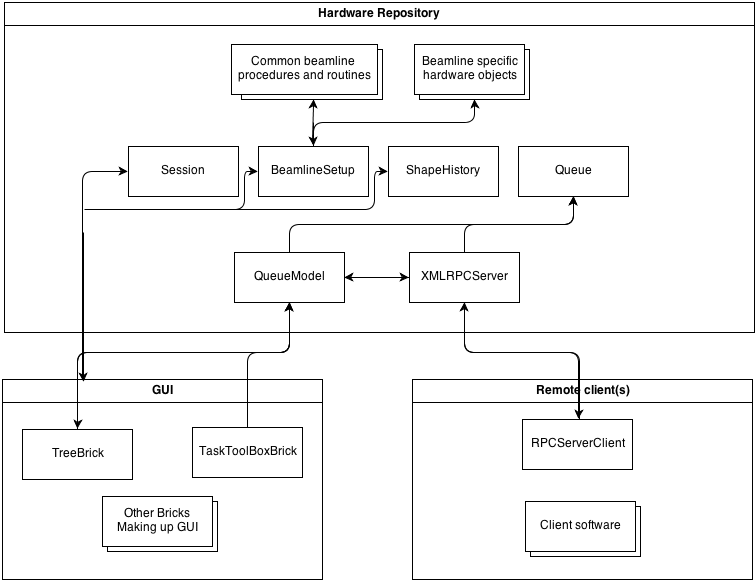

Design Overview¶
Hardware objects are located in two submodules:
- HardwareObjects stores all hardware objects that are used within MXCuBE. It contains directories for site specific hardware objects (EMBL, ESRF, MAXLAB, SOLEIL) and directories for detectors and sample_changer.
- HardwareObjects directory in HardwareRepository holds basic hardware objects, like motors, actuators and etc.
Hardware objects are managed by HardwareRepository and each of them has a xml configuration (more detailed information here: Configuration example Files).
The figure below shows the principal communication paths between the Hardware Repository (Hardware Objects), GUI (Framework Bricks) and clients using the XMLRPCServer feature.
Further main hardware objects are described.
Queue and QueueModel¶
The QueueModel is a key component in MxCuBE. It handles the data model for the Queue. Each task in the queue, is a subclass of QueueEntry, and is associated with a model data node (TaskNode). The QueueModel and is designed to be part of a MVC like pattern, where the QueueModel acts as the Controller. The QueueModel has a reference to one or more RootNode objects which contain the model. The TreeBrick and the Queue hardware objects behaves as views for the QueueModel. The TreeBrick is displaying the tasks for the user while the Queue represents the exectuable ‘entity’. The Queue contains QueueEntry objects, which each holds a reference to to a TaskNode in the model. A mapping between TaskNodes and QueueEntries can be found at the end of the file HardwareObjecs/queue_entry.py. This makes it easy to add a new type of task. The only thing that is needed is:
- Create a TaskNode that holds any data needed to perform the task.
- Implement the logic for the task, subclassing QueueEntry
- Add the mapping.
BeamlineSetup¶
The BeamlineSetup is used like a container for hardware objects. Within the code there is a tendency to keep all hardware objects in the beamline setup and call them from gui bricks, rather then defining all hardware objects in each brick.
Session¶
Session module defines current MXCuBE session. In the xml of it is possible to define: synchrotron name, endstation name, beamline name and information related to the experiment: file suffix, base directory, raw data folder name etc.
ShapeHistory and Qt4_GraphicsManager¶
In Qt3 version graphics are handled by ShapeHistory hardware object and in Qt4 version Qt4_GraphicsManager with graphics library is used.
Other modules¶
For communication with ISPyB ISPyBClient2 hardware object is used.